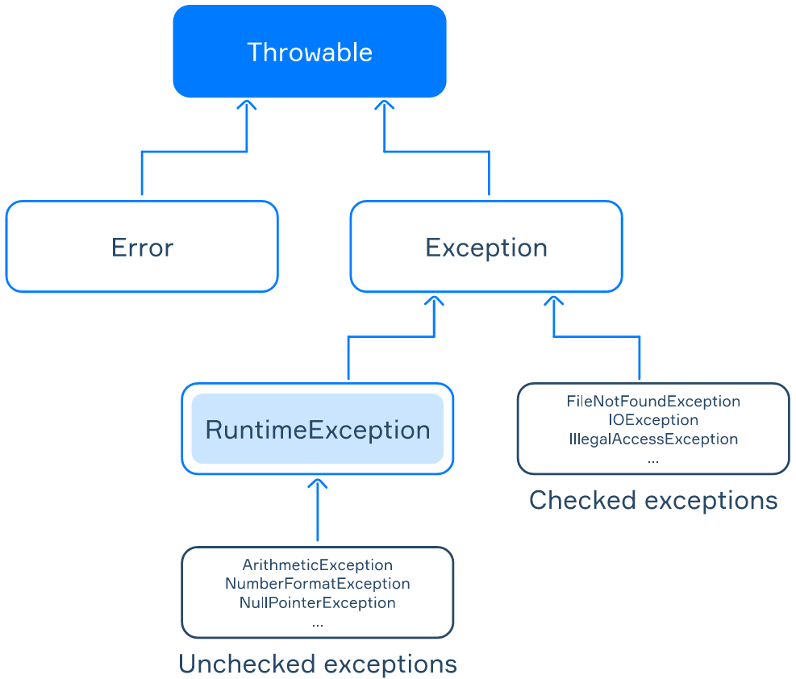

Java is primarily an object-oriented language. In such a paradigm, all exceptions are considered objects of special classes organized into a class hierarchy. Understanding this hierarchy is essentially both for job interviews and daily programming practice.
The following picture illustrates the simplified hierarchy of exceptions:
The base class for all exceptions is java.lang.Throwable. This class provides a set of common methods for all exceptions:
String getMessage() returns the detailed string message of this exception object;Throwable getCause() returns the cause of this exception or null if the cause is nonexistent or unknown;printStackTrace() prints the stack trace on the standard error stream.We will return to the methods and constructors of this class in the following topics.
The Throwable class has two direct subclasses: java.lang.Error and java.lang.Exception.
Error class represent low-level exceptions in the JVM, for example: OutOfMemoryError, StackOverflowError;Exception class deal with exceptional events inside applications, such as: RuntimeException, IOException;RuntimeException class is a rather special subclass of Exception. It represents so-called unchecked exceptions, including: ArithmeticException, NumberFormatException, NullPointerException.While developing an application, you normally will process objects of the Exception class and its subclasses. We won't discuss Error and its subclasses here.
Throwable, Exception, RuntimeException and Error) are located in the java.lang package. They do not need to be imported. Yet their subclasses might be placed in different packages.
All exceptions can be divided into two groups: checked and unchecked. They are functionally equivalent but there is a difference from the compiler's point of view.
1. Checked exceptions are represented by the Exception class, excluding the RuntimeException subclass. The compiler checks whether the programmer expects the occurrence of such exceptions in a program or not.
If a method throws a checked exception, this must be marked in the declaration using the special throws keyword. Otherwise, the program will not compile.
Let's take a look at the example. We use the Scanner class, which you are already familiar with, as a means to read from standard input, to read from a file:
public static String readLineFromFile() throws FileNotFoundException {
Scanner scanner = new Scanner(new File("file.txt")); // java.io.FileNotFoundException
return scanner.nextLine();
}Here, FileNotFoundException is a standard checked exception. This constructor of Scanner declares a FileNotFoundException exception, because we assume that the specified file may not exist. Most importantly, there is a single line in the method that may throw an exception, so we put the throws keyword in the method declaration.
2. Unchecked exceptions are represented by the RuntimeException class and all its subclasses. The compiler does not check whether the programmer expects the occurrence of such exceptions in a program.
Here is a method that throws a NumberFormatException when the input string has an invalid format (e.g., "abc").
public static Long convertStringToLong(String str) {
return Long.parseLong(str); // It may throw a NumberFormatException
}This code always successfully compiles without the throws keyword in the declaration.
The Error class and its subclasses are also considered as unchecked exceptions. However, they form a separate class.
All exceptions are represented by the Throwable class, which has two subclasses: Exception and Error. There are also two types of exceptions: checked and unchecked.
Unchecked exceptions are expected by the compiler, so you don't have to handle them. They are represented by the RuntimeException subclass of the Exception class. Errors from the Error class are also considered unchecked.
Checked exceptions have to be handled and indicated explicitly. They are located in all the other subclasses of Exception.